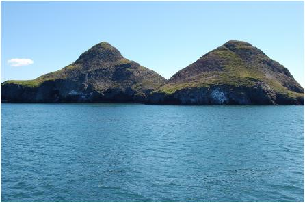

<< retur På sporet af Erik den Røde
Vi er på vej mod Haukadalur, hvor Erik den Røde slog
sig ned efter opbruddet fra gården ved Drangar på
Hornstrandir, hvor han havde boet i nogle år med sin fader
Thorvald, indtil denne døde. Thorvald var flygtet til Norge
på grund af nogle drab, han havde forvoldt.
År tilbage var jeg i nærheden af Drangar ved Ishavskysten,
hvor der var gode græsgange til dyrene i dalen og godt fiskevand
og masser af drivtømmer til at bygge et solidt vikingeskib.
I Isafjördur var Erik den Røde så heldig at
møde Tjoldhilde - en datter af en rig bonde fra Hauka-dalur
ved roden af Snæfellsneshalvøen. Vi vil følge
i Erik den Rødes fodspor mod Stykkishólmur, hvor
vi skal bo de næste 10 dage.
Vi kører i langsomt tempo fra Hvam og nyder udsigten mod
Snæfellnes-halvøen på den anden side af Hvamsfjördur.
På toppen af en bakke kommer der tordnende en lastvogn imod
os med mindst 100 kilometer i timen. Han har taget et langt tilløb
ned ad en bakke for at komme op til os på toppen af bakken,
og nu nærmer han sig os med lynets hast. Vi må skyndsomst
trække ind til siden og lader ham passere, mens småsten
og grus slår op på vores forrude, som hel-digvis holder
stand. Jeg mumler: ”Jøsses Kors”, og slår
korsets tegn for mit bryst, som min salig mormor ofte gjorde,
når hun befandt sig i en vanskelig situation.
Jeg
ser nu, at vi holder ved indkørslen til en parkerings-plads
ved Krosshólar (Korsklippen), og at der på toppen
af klippen står et stort basaltkors med en indskription
på. Ved nærmere eftersyn viser det sig, at korset
er sat til minde om Aude den Dybsindige, som i en periode var
gift med krigerkongen Olaf Hvide, som havde indtaget Dublin og
gjort sig til konge der. Han faldt siden i kamp. Aude havde dog
inden født ham sønnen Thorstein Rød, som
blev konge over det halve Skotland, men han slægtede sin
far på og faldt også i kamp, så Aude måtte
finde på et eller andet. Hun byggede sig så et vikingeskib
- en knarr - og sejlede til Orkneyøerne og derfra videre
til Island, hvor hun tog Daleland i besiddelse og slog sig ned
i Hvam, hvor vi lige har været. I Erik den Rødes
Saga står der, at hun havde sit bedested på Krosshólar,
hvor hun lod oprejse flere kors, thi hun var døbt og vel
troende. Jeg går som Aude op til korset på klippetoppen
og beder en lille takkebøn over, at vi endnu er i live
på trods af dødskørslen af en bersærk
af en frontrudeknuser.
En af Audes trælle hed Vifil en mand af en fornem slægt
fra De Britiske Øer. Ham frigav Aude, og gav ham Vifilsdal
i besiddelse, og han fik to sønner Thorbjørn og
Thorgeir. Det var Thorbjørn, der senere blev venner med
Erik den Røde og hjalp ham ud af Breidafjördur, da
han blev dømt fredløs i 3 år. Senere følger
han efter ham og slår sig også ned på Grønland.
Vi kører videre mod Buðardalur
og spiser en sandwich på cafeen ved havnen, hvor der står
en smuk lille skulptur af Ásmundur Sveinsson, med temaet
en mor, som krammer sit barn. På baggrund af oplevelsen
på bakken fornemmer jeg intensiteten i krammet og lader
mig fange af figuren med den blå fjord og himlen som baggrundskulisse.
Efter pausen i Buðardalur
går turen ind i Haukadalur, hvortil Erik den Røde
drog med sin kone Thjodhildur. Dalen virker med det samme indbydende
med den store sø Haukadalsvatn på højre hånd.
Søen forsynes med vand fra Haukadalsá og har afløb
til havet, og der er ingen tvivl om, at det har været godt
fiskevand på Erik den Rødes tid, ligesom det er nu.
For enden af søen ligger der frodige græsgange omkring
åen og op ad dalsiderne, og vi når hurtigt frem til
Eiriksstaðir
neden for Vatnshorn, hvor han boede med sin kone Thjodhilde og
fik sønnen Leif omkring 974 - den søn som siden
fik tilnavnet Den Lykkelige og fik tilkendt æren af at have
opdaget Amerika.
Eriks
gård er nu rekonstrueret på stedet, og vi er meget
spændte på at se huset inden i og køber billetter
i den lille turist bod, hvor man også kan købe kaffe
og chokolade. Vi går ind i tørvehuset, hvor en langild
brænder i husets midtergang. På begge sider er der
sengebåse med flotte bænkestokke i udskåret
træ. For enden af gangen ligger køkkenet (eldhus),
hvor kun husets kvinder måtte komme. Børn og ugifte
kvinder skulle sove på hemsen over indgangspartiet for ikke
at blive tvangsindlagt til Eriks og Thjoldildes sexliv. Vores
islandske guide, som er klædt i vævet vadmelstøj
i stærke, klare farver, fortæller levende om livet
i huset med den store husholdning for over tyve mennesker. Vi
får demonstreret væven, hvor en dygtig kvinde kunne
væve så stort et stykke stof på en dag, svarende
til en gåtur på 28 km, hvis man talte skridtene med
skytlen frem og tilbage - i sandhed imponerende!
Medens jeg er ude for at finde et toilet, bliver min frænde Preben Ord-kløver iført Erik den Rødes kamphjelm og sværd, og han modtager mig med et udfald, da jeg kommer tilbage. Jeg mumler endnu engang: ”Jøsses” selv om jeg er vant til at krydse ord-klinger med Preben. Han responderer øjeblikkeligt med et: ”ved Thor - om du tør”.
Erik
den Røde var ikke sådan at bide skeer med, og det
hører vi nu nærmere om af den udmærkede guide,
der fortæller: To af Eriks trælle udløser et
fjeldskred, som rammer naboen Valtjofs gård - en hændelse,
som får vidtrækken-de konsekvenser, idet Valtjofs
frænde Eyolf Sør dræber trællene oven
for Vatnshorn. Eriks tem-perament lyser rødt - naboen har
forgrebet sig på hans ejendom, og det må hævnes
tifold, for at han kan beholde sin ære. Så Erik dræber
Eyolf Sør, og så dræber han også Holmgangs-Rafn
ved Leikskálar. Blodhævnen er sat i gang og er ikke
til at stoppe uden en mægling, og Erik er nødt til
at forlade sin gård i største hast.
Vi sidder på terrassen uden for turistkon-toret og drikker
kaffe og spiser Prins Polo - en islandsk variant af Kitkat og
kikker op mod skråningen, hvor fjeldskredet blev udløst.
Måske var det bare et hændeligt uheld, men uden det
skred ville Erik den Røde aldrig være husket i dag.
Skredet startede blodhævnslavinen. Uden den kunne Erik have
levet fredeligt til sine dages ende, men var aldrig blevet udødeliggjort
gen-nem sagafortællingerne. Han ville da være død
mæt af dage og have kunnet glæde sig over børn
og børnebørn. Lille Leif, som senere opda-gede Amerika,
var kun 4-5 år gammel, da familien i hast måtte forlade
det lille paradis, de havde bygget op i Haukadalur.
Sandsynligvis sejlede hele husstanden af sted i den knarr, Erik
havde ladet bygge. De fulgte nordkysten af Snæfellsnes i
Hvammsfjörður
og håbede at finde et egnet sted at gå i land og bosætte
sig på en af øerne i Breiðafjörður.
Han fandt de store øer Brokey og Öxney (Okseø)
med gode græsgange velegnede. Første vinter boede
han på Sudurey syd for Brokey. Siden slog han sig ned på
Öxney og byggede en gård, som han naturligvis kaldte
Eriksstad. Den lå godt beskyttet nord for Brokey med udsyn
til alle verdenshjørner. Når Erik skulle ind til
land og ordne forskellige ærinder, lagde han til ved en
lille vig ved gården Drangar, som mindede ham om vigen på
Hornstrandir af samme navn og gavn.
I nærheden af vigen lå gården Breidabólstaður,
som han havde så god en kontakt med, at han havde lånt
gårdmanden Thorgest sine sengestolper fra Haukadalur, medens
han byggede sin egen gård. Da han var ved at være
færdig med det, ville han gerne have sine sengestolper retur,
men det var bonden ikke til sinds at give ham. Nu flammer Erik
den Rødes vrede op igen, og han henter på egen hånd
sengestolperne en dag, da bonden på Breidabolsted ikke er
hjemme. Han drager ned mod gården Drangar for at sejle over
til Öxney, men Thorgest indhenter ham, og det kommer til
en kamp der mellem Erik den Røde og Thorgest og hans to
sønner. Erik fælder de to sønner og nogle
flere af Thorgest´s mænd, og nu er gode råd dyre.
Erik har på forhånd tabt sagen og dømmes på
Thorsnæs Ting ved Stykkishólmur fredløs i
3 år - faktisk en mild dom over en massemorder, men Erik
havde mange venner, som gjorde alt for at støtte ham.
Vi vil gerne fortsætte i fodsporet på Erik, så
vi bryder op fra Haukadalur og følger Skógarströnd
langs nordkysten af Snæfellsneshalvøen mod Stykkishólmur.
Der er en betagende udsigt over Hvammsfjörður
, og vi passerer her og der vandløb fra de sneklædte
fjelde mod syd. For vores indre blik kan vi nu se Erik den Røde
på sit skib på vej mod Brokey. Vi nærmer os
Breiðabólsta
ður og drejer
til venstre ind på en lille grusvej ned mod gården
og kirken. Her var det altså, at de famøse sengestolper
blev lånt ud til bonden Thorgest, og man kan undre sig over,
at han ikke ville levere dem tilbage. Der er ikke meget at se
på Breiðabólstaður,
og da kirken er aflåst, kører vi videre mod Drangar
nede ved vigen. Måske den røde Erik overreagerede
vildt, som han havde gjort så ofte før. Drabene på
de to sønner og nogle hjælpere foregik nede ved gården
Drangar, som vi nu kører ned til ad en elendig grusvej.
Her må vi passe på ikke at ridse undervognen, da hjulsporene
er dybe og vejen ujævn. Vi når ned til en indhegning
med pigtråd, som man bedes om ikke at forcere. Vi må
derfor opgive ønsket om at komme helt ned til vigen, som,
vi dog tydeligt kan se, har været en perfekt lille naturhavn
for Erik den Røde, som efter drabene er kommet i en alvorlig
knibe. Det samme gør vi, fordi vi prøver at køre
videre ad samme markvej, der fører tilbage til Thorgest´s
gård, og vi ender i et lille udtørret flodleje, hvorfra
vi absolut ikke kan komme videre. Vi får dog vendt kareten
og kommer op på farbar vej igen, takket være hjælp
fra vores stærke kvinder.
Fra Breiðabólstaður
følger vi Erik videre mod det tingsted, hvor han blev dømt
fredløs. Så vi kører mod Helgafell, som ligger
på højre hånd 7-8 kilometer uden for Stykkishólmur.
Solen skinner stadig fra en skyfri himmel, da vi kører
ind til gården og kirken for foden af Det Hellige Fjeld.
Her er smukt - meget smukt med et rigt fugleliv på de vidtstrakte
enge ud mod fjorden. Vi vandrer ad en udmærket sti op på
fjeldet og står snart på toppen, hvor der ligger ruiner
af en lille bygning - måske et kapel, som har tilhørt
den Augustinerorden, der havde kloster for foden af Helgafell
fra 1184-1550. Fra toppen har vi den mest fantastiske udsigt over
søen for foden af fjeldet og engdragene ud mod Breiðafjörður.
Man forstår godt, at fjeldet har tiltrukket sig det hellige.
Vi
prøver, om vi kan lokalisere et tingsted for foden af fjeldet,
men det er ikke så nemt. Jeg ved, at der skulle ligge en
lavablok med skarpe kanter, hvor der har været ofret til
Thor, og kan se en blok øst for fjeldet, som ligger et
stykke ude i engen. Den må jeg ned og tage nærmere
i øjensyn. Vi går ned ad fjeldet, og for foden af
dette ligger der en gravsten over heltinden fra Laxdala Saga
Guðrun
Ósvifurs-dóttir med årstallet 1008 indgraveret.
Det eneste, jeg ved om hende, er, at hun var gift med 4 mænd
- en bedrift i sig selv af mændene - utroligt at de turde!
eg er nu mest optaget af at finde tingstedet og går ud ad
markvejen øst for fjeldet mod den lavablok, jeg kunne se
fra toppen. Da jeg når lavablokken og ser op på Helgafells
lodrette basaltsøjler, kommer jeg til at tænke på
Almannagjá ved Thingvellir og beslutter mig foreløbig
for, at det kunne være tingstedet, men er ikke sikker, så
jeg bliver nødt til at vende tilbage til næste sommer
for at gøre min research færdig - og det passer mig
rigtig godt. Vi kører nu hjem til vores logi på Laufásvegur
efter først at have bestilt en sightseeing sejltur på
Breiðafjörður
den næste dag kl. 11, da vi meget gerne vil ud til øen
Dimonarklakkar, hvor Erik den Røde efter sigende skulle
have skjult sig på sin knarr, inden han drog ud i det uvisse
mod Gunbjørns skær i vest, som han havde hørt
om. Kunne der ligge land der, hvor han så kunne slå
sig ned i de næste tre år, indtil fredløshedsperioden
var overstået, og han atter kunne vende tilbage til Island?
Næste morgen tidligt går vi op på den klippe,
der beskytter indsejlingen til havnen. Det var tidligere en ø
- Súgandisey
- men er nu nærmest blevet til en halvø ved at være
forbundet med havnebassinet med en mole mod øst. Jeg kan
se, at det er resterne af en gammel vulkan, hvor lavaproppen i
kraterrøret har modstået tidens tand og står
smukt med lodrette basalt-søjler i polygone former.
Oppe på toppen finder vi en bænk højt hævet
over havnebassinet, og her sætter vi os og nyder synet af
den smukke by med de sneklædte bjergtoppe i baggrunden.
Byen er, som det gamle Rom, bygget på 7 høje, og
vi bor på en af dem på Laufasvegur. Et andet markant
højdedrag befinder sig der, hvor vandmuseet er placeret
- det der tidligere var byens bibliotek. I dalen mellem disse
højdedrag ligger byens centrum med Hotel
Egilsen,
som vores værtinde Greta åbnede, mens vi var i byen.
Vi blev inviteret med til festen og sad udenfor til sent om aftenen
og nød den nordiske sommernat til lyden af byens band med
harmonikaspil og en virtuos trommeslager.
Vi går nu op til det gamle fyrtårn, som står
øverst på knolden og ser i retning mod Dimonar-klakkar
i nordøst og kan tydeligt se dens to tinder:

Vi
glæder os til sejlturen imellem de over 2500 øer
og holme i Breiðafjörður
og håber på at komme til at se mange fugle på
turen. Medens vi sidder her, får vi en fantastisk oplevelse,
idet der pludselig dukker tre spækhuggere op ca. 100 meter
nord for øen, vi sidder på. Det er et betagende syn,
og vi kan høre de majestætiske dyrs åndedræt
gennem de store blowholes på rygsiden. Det er en han og
to hunner, og hannens rygfinne er på størrelse med
et trekantet sejl på et stort surfboard. Min kone virker
lige så lykkelig, som da vores førstefødte
kom til verden. Vi kan følge hvalerne i lang tid, før
de forsvinder ud mod det åbne hav mod vest.
Erik den Røde skulle samme vej efter dommen på Thorsnæs
Ting, for nu måtte alle dræbe ham, og hans fjender
prøvede ihærdigt at få fat på ham for
at hævne drabene. De ledte efter Erik dag og nat, men han
var snu og skjulte sig på den mest synlige ø af dem
alle - øen med de to pyramideformede toppe. Nogle timer
senere ligger vi i Eriksvogur
- den vig hvor Erik skjulte sin båd under bladhanget på
de store træer, der voksede i vandkanten for over 1000 år
siden.
Her
tog han afsked med sine mange venner og lovede at give dem besked,
hvis han fandt brugbart land mod vest. Vores skipper fortæller
engageret og nuanceret om hændel-sen, som den er berettet
i Erik den Rødes Saga og Grønlændinge Saga
fra Flateyjarbók. Vi får set masser af fugle på
øer med fuglefjelde, og skip-per sejler så tæt
på, at man kan mærke lugten af latrin fra fjeldet
og se rederne med de smukke søpape-gøjer og den
kulsorte skarv. Vi når også at se et glimt af en havørn,
men kan ikke komme tæt på rede-stedet, da ørnen
skal have fred og ro. Mod vest troner Snæfellsnes-jøklen,
og vi kan se den hele vejen tilbage mod havnen i Stykkishólmur.
Godt at vide, at Erik den Røde havde den bagbords som et
lysende fyrtårn, da han drog ud mod det ukendte land mod
vest. Så vidste han, at han altid kunne finde vejen tilbage
til Breiðafjörður.
Morten
Stender
<< retur | |